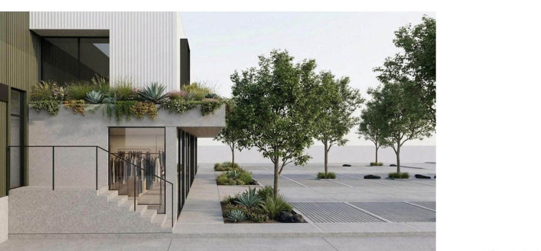
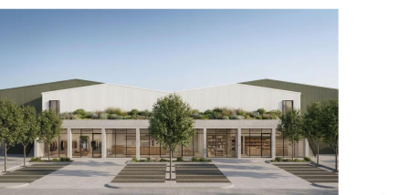

Industrial Flex warehouse in Culiacán, Sinaloa, Mexico. 2026.

Industrial Flex warehouse in La Primavera.
No further area, client, or program figures are published here.
Almacén Industrial · La Primavera is an Industrial Flex warehouse in Culiacán, Sinaloa, Mexico.
The views show a two-story building with an exposed-concrete ground floor, floor-to-ceiling glass, a planted terrace, and parking. The street facade has a concrete-grid glass ground floor, a planted terrace, and gabled volumes clad in white and olive-green corrugated metal.
